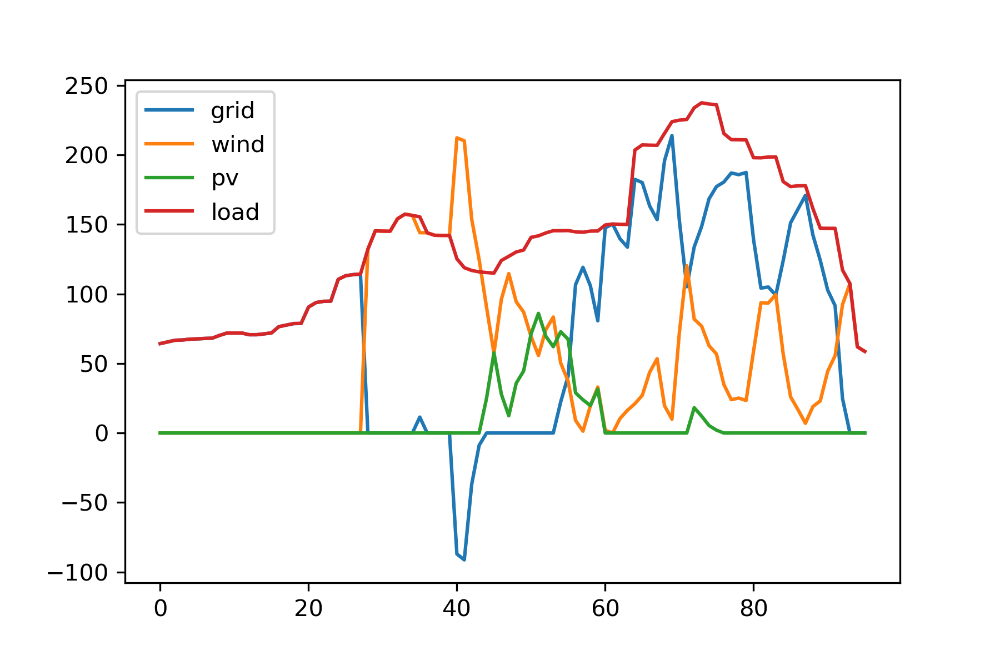
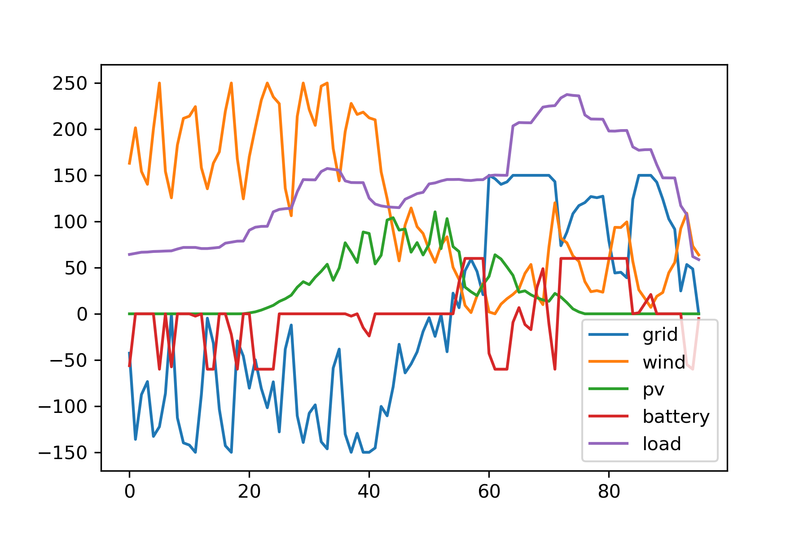
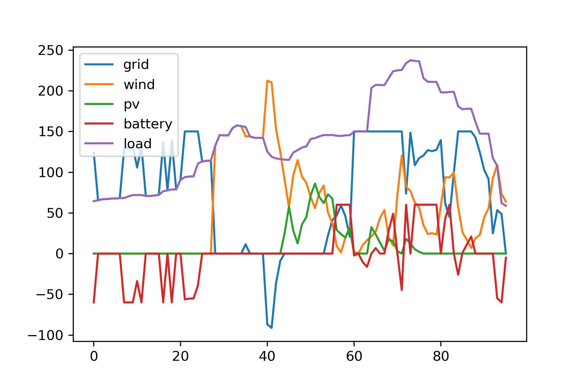

微电网日前优化调度入门：求解一道数学建模题¶
发布于：2022-10-22 | 分类：mathematics , optimization
最近看了一些微电网优化调度的论文，苦于无从下手之际，看到一道微电网日前优化调度相关的数学建模题；题目提供了一个简单的风光储微电网场景及测试数据，正好拿来练手。本文基于Python第三方库PuLP实现题目的混合整数规划模型，并使用默认的CBC求解器求解。输入数据及汇总代码，参见文末。
问题描述¶
问题出自第十届“中国电机工程学会杯”全国大学生电工数学建模竞赛A题：微电网日前优化调度。
下图示意了一个含有风机、光伏、蓄电池及常见负荷的微电网系统。日前经济调度问题是指在对风机出力、光伏出力、常规负荷进行日前（未来24h）预测的基础上，考虑电网测的分时电价，充分利用微网中的蓄电池等可调控手段，使微电网运行的经济性最优。

题目要求在如下已知条件下，求不同调度方案的平均用电成本：
-
未来24h、每隔15min共96个时间点的负荷、光伏、风机出力预测，及分时电价数据；
-
风机容量250kW，发电成本0.52元/kWh；
-
光伏容量150kW，发电成本0.75元/kWh；
-
蓄电池容量300kWh；SOC初始值0.4，运行范围[0.3, 0.95]；由充电至放电成为为0.2元/kWh；日充放电次数限制均为8；忽略蓄电池损耗；
完整问题描述参考：
风光储优化调度模型¶
题目涉及电网、新能源（风机、光伏）、蓄电池及负荷四类资源，我们依次建立其线性规划模型，然后交给求解器求解。一个线性规划模型包含：
- 设计变量：各类资源的实时出力数据
- 约束条件：能量平衡及各类资源应该满足的技术参数，例如蓄电池的容量限制、SOC限制、充放电次数限制等
- 目标函数：运行成本，具体到本题即用电成本
本文基于 Python 第三方库PuLP实现。PuLP是一个线性规划问题建模库，将数学模型转换为 MPS 或者 LP 文件，然后调用 LP 求解器如 CBC、GLPK、CPLEX、Gurobi 等求解。具体用法参考下面链接，本文不再赘述。
开始之前先抽象一个模型基类，表示各类调度设备，包含名称、容量、使用成本等基本属性，同时提供一个create_model()方法，用于实现设计变量、约束条件、目标函数等线性规划模型三要素。模型求解后，调用output属性获取变量值，即每个时刻的出力。
import pulp
import numpy as np
class Model:
def __init__(self, name:str,
capacity:float, # resource capacity
unit_cost:float): # unit cost when using the energy
'''Base class for resource model, e.g., Grid, Renewable and Storage.'''
# technical parameters
self.name = name
self.capacity = capacity
self.unit_cost = unit_cost
# linear programming model: variables, constraints and objective
self.variables = None
self.constraints = None
self.objective = None
def create_model(self, time_points:int, dt:float):
'''How to create the LP model.'''
raise NotImplementedError
@property
def output(self): return np.array([v.value() for v in self.variables])接下来依次建立电网、新能源（风机、光伏）及蓄电池的模型。
(1) 电网模型¶
电网模型继承自Model基类，同时新增了 卖电收益 属性，并且满足容量约束即每个时刻的出力不能超过限定值，目标函数为运行成本即用电费用与卖电收益的差值。
直观地，任意时刻可以用一个变量 p^i 来表示电网的出力：正值表示从电网买电，或者负值表示卖电给电网。但是，事先并不知道 p^i 的正负，也就没法计算此刻的运行成本（不能将线性规划变量直接用于if-else语句中）。因此，引入买电、卖电两个中间变量来分开描述：
- p^i_f \geq 0 表示 i 时刻从电网买电量；
- p^i_t \geq 0 表示 i 时刻向电网卖电量；
因为同一时刻电流只能单向流动，即 p^i_f 和 p^i_t 至少有一个等于0：p^i_f * p^i_t=0。
但这并不是一个合法的线性约束，需要再引入一个0-1变量：
- b_i=\{0，1\}：1 表示从电网买电即 p^i_t=0，0 表示卖电到电网即 p^i_f=0
于是线性约束表示为：
其中，C为电网容量（交换功率）限制值。
最终，电网 i 时刻实际出力 p^i 及用电成本（买电或卖电）c^i：
其中，u_1,u_2分别为该时刻单位买电成本、卖电收益（元/kWh），dt 为时间步长。
class Grid(Model):
def __init__(self, name:str,
capacity:float,
unit_cost:np.ndarray, # unit cost when buying electricity from utility grid
unit_profit:np.ndarray): # unit profit when selling electricity to utility grid
super().__init__(name, capacity, unit_cost)
self.unit_profit = unit_profit
def create_model(self, time_points:int, dt:float):
# define variables at each time point
vars_from = [pulp.LpVariable(name=f'{self.name}_from_{i}', lowBound=0) for i in range(time_points)]
vars_to = [pulp.LpVariable(name=f'{self.name}_to_{i}', lowBound=0) for i in range(time_points)]
self.variables = [v1-v2 for v1,v2 in zip(vars_from, vars_to)]
# constraints: capacity limit
# 0<=var_from<=C*b
# 0<=var_to<=C*(1-b)
self.constraints = []
vars_b = [pulp.LpVariable(name=f'{self.name}_binary_{i}', cat=pulp.LpInteger) for i in range(time_points)]
for v1,v2,b in zip(vars_from, vars_to, vars_b):
self.constraints.append(v1<=self.capacity*b)
self.constraints.append(v2<=self.capacity*(1-b))
# objective
self.objective = pulp.lpSum([v*x for v,x in zip(vars_from, self.unit_cost)])*dt - \
pulp.lpSum([v*x for v,x in zip(vars_to, self.unit_profit)])*dt(2) 新能源发电模型¶
将风机和光伏抽象为新能源发电模型，约束条件为 每一时刻的电力供应不大于预测出力，如果不允许弃风弃光的话，则等于预测出力值。因此，在Model类基础上增加两个输入参数：
forecast：每一时刻的出力预测，即一个列向量/数组/时间序列；allow_curtailment：是否允许弃风弃光，默认允许。
相应地，提供一个utilization输出属性表示新能源发电的实际利用率。
class Renewable(Model):
def __init__(self, name:str,
capacity:float,
unit_cost:float,
forecast:np.ndarray, # forecasting output
allow_curtailment:bool=True): # allow curtailment or not
super().__init__(name, capacity, unit_cost)
self.forecast = forecast
self.allow_curtailment = allow_curtailment
def create_model(self, time_points:int, dt:float):
# define variables at each time point
self.variables = [pulp.LpVariable(name=f'{self.name}_{i}', lowBound=0) for i in range(time_points)]
# constraints: v<=forecast
if self.allow_curtailment:
self.constraints = [v<=x for v,x in zip(self.variables, self.forecast)]
else:
self.constraints = [v==x for v,x in zip(self.variables, self.forecast)]
# objective
self.objective = pulp.lpSum(self.variables)*self.unit_cost*dt
@property
def utilization(self): return self.output.sum() / self.forecast.sum()(3) 蓄电池模型¶
原题已经给出了蓄电池的混合整数规划数学模型，除了基类中的容量、单位用电成本外，还有如下主要参数：
capacity_limit：爬坡限制值，即原题公式（5）中的数值 20%init_soc：初始SOC状态soc_limit：电量范围SOC限制cycle_limit：充放电次数限制
参考原题的约束：
- 爬坡约束：公式（3）（5）
- 容量约束：公式（1）（2）
- 调度周期始末电量相等：公式（4）
- 充放电次数约束：公式（6）
类比上文对电网买电、卖电行为的建模，同一时刻也需要三个中间变量：充电功率 p^i_c、放电功率 p^i_d、充放电0-1状态 b^i （1-放电，0-充电）来描述电池的出力。前三个约束的实现不再赘述，下面重点解析充放电次数约束。
充放电状态序列 b=\{b^1, b^2, ..., b^n\}，引入辅助的0-1变量 t 表示相邻状态相减的绝对值，即
当 t^i=1 时，即相邻的充放电状态由0变成了1，或者由1变成了0，表示完成了一次充放电周期。于是总的充放电次数限制约束可以表示为：
至此还剩最后一个问题，如何将含有绝对值的等式 t^i = |b^{i+1} - b^i| 变换为线性约束？
结合本文场景，将等式松弛一下 t^i \geq |b^{i+1} - b^i|：
- t^i=1 正是我们需要计数的情况
- t^i=0 没有增加计数，此时 b^{i+1} = b^i 表明并未发生充放电状态变化，恰好可以对应上
于是，上述绝对值等式约束等效为：
class Storage(Model):
def __init__(self, name:str,
capacity:float,
unit_cost:float,
capacity_limit:float, # charging / discharging ramping limit
init_soc:float, # initial state of charge
soc_limit:list, # SOC limit
cycle_limit:int): # charing / discharging cycle counts limit
super().__init__(name, capacity, unit_cost)
self.init_soc = init_soc
self.soc_limit = soc_limit
self.cycle_limit = cycle_limit
self.capacity_limit = capacity_limit
def create_model(self, time_points: int, dt: float):
# define variables at each time point
vars_ch = [pulp.LpVariable(name=f'{self.name}_charge_{i}', lowBound=0) for i in range(time_points)]
vars_dis = [pulp.LpVariable(name=f'{self.name}_discharge_{i}', lowBound=0) for i in range(time_points)]
self.variables = [v1-v2 for v1,v2 in zip(vars_dis, vars_ch)]
# constraints 1: ramping limit
# 0<=var_dis<=C*b
# 0<=var_ch<=C*(1-b)
self.constraints = []
vars_b = [pulp.LpVariable(name=f'{self.name}_binary_{i}', cat=pulp.LpInteger) for i in range(time_points)]
C = self.capacity * self.capacity_limit
for v1,v2,b in zip(vars_dis, vars_ch, vars_b):
self.constraints.append(v1<=C*b)
self.constraints.append(v2<=C*(1-b))
# constraints 2: SOC limit
soc = self.init_soc
s1, s2 = self.soc_limit
for v1,v2 in zip(vars_ch, vars_dis):
soc += (v1*dt - v2*dt) / self.capacity
self.constraints.append(soc>=s1)
self.constraints.append(soc<=s2)
# constraints 3: same SOC at the scheduling end
self.constraints.append(pulp.lpSum(self.variables)==0)
# constraints 4: charging / discharging cycle limit
# t = |b_i-b_{i+1}|
# sum(t)<=N
vars_db = [vars_b[i+1]-vars_b[i] for i in range(time_points-1)]
vars_t = [pulp.LpVariable(name=f'{self.name}_binary_t_{i}', cat=pulp.LpInteger) for i in range(time_points-1)]
for db, t in zip(vars_db, vars_t):
self.constraints.append(db>=-t)
self.constraints.append(db<=t)
self.constraints.append(pulp.lpSum(vars_t)<=self.cycle_limit)
# objective
self.objective = pulp.lpSum(vars_dis)*self.unit_cost*dt(4) 风光储优化调度模型¶
最后，我们抽象出一个微电网类，包含上述能源设备resources及负荷load，同时引入系统能量平衡约束，建立最终的优化模型。其中的几个方法：
optimize()：建模和求解过程operation_cost：目标函数值即总用电费用average_cost：平均用电成本
import matplotlib.pyplot as plt
class MicroGrid:
def __init__(self, resources:list, load:np.ndarray, time_step:float) -> None:
self.resources = resources
self.load = load
self.time_step = time_step
# create problem: minimize the operation cost
self.prob = pulp.LpProblem(name='microgrid_optimization', sense=pulp.LpMinimize)
@property
def operation_cost(self): return self.prob.objective.value()
@property
def average_cost(self): return self.operation_cost / (self.load.sum()*self.time_step)
def optimize(self):
'''Micro-grid operation optimization.'''
# collect resources models
d_variables, constraints, objective = [], [], 0.0
time_points = self.load.size
for resource in self.resources:
resource.create_model(time_points, self.time_step)
d_variables.append(resource.variables)
constraints.extend(resource.constraints)
objective += resource.objective
# add constraints: resource level
for c in constraints: self.prob += c
# add constraint: energy balance
for i in range(time_points):
_vars = [variables[i] for variables in d_variables]
self.prob += pulp.lpSum(_vars)==self.load[i]
# objective
self.prob += objective
# solve
self.prob.solve()
# output
self._summary()
def _summary(self):
print(f'Status: {pulp.LpStatus[self.prob.status]}')
print(f'全天总供电费用：{round(self.operation_cost,4)} 元，负荷平均购电单价：{round(self.average_cost,4)} 元/kWh')
# plot
for r in self.resources: plt.plot(r.output, label=r.name)
plt.plot(self.load, label='load')
plt.legend()求解典型场景¶
本节根据上文建立的优化调度模型，求解提问中的不同调度策略。
先导入全天96个时刻的时间序列数据：
# read text to list
with open('input.csv', 'r', encoding='utf-8') as f: lines = f.readlines()
# print the first three lines for example
for line in lines[:3]: print(line)
# list to numpy 2D array
data = [list(map(float, line.split(','))) for line in lines[1:]] # except the header line
data = np.array(data)
data_load, data_wt, data_pv, unit_profit, unit_cost = [data[:, i] for i in range(1,6)]
# output:
# 序号,负荷(kW),风机(kW),光伏(kW),售电(元/kWh),购电(元/kWh)
# 1,64.3,163.1,0,0.22,0.25
# 2,65.5,201.47,0,0.22,0.25(1) 经济性评估方案¶
问题：微网中蓄电池不作用，微网与电网交换功率无约束，无可再生能源情况下，分别计算各时段负荷的供电构成（kW）、全天总供电费用(元)和负荷平均购电单价（元/kWh）。
这一问不用优化模型也能解，多余的电卖给电网、不足的电从电网购买即可，参考这篇文章的解析过程。但既然我们已经建立了统一的优化调度模型，本例只要引入电网一种资源，将其作为一个特例直接求解即可。
因为电网交换功率没有限制，直接设一个较大的数例如10^6即可。
# set a large value 1e6 as no limit on energy exchanging with grid
grid = Grid(name='grid', capacity=1e6, unit_cost=unit_cost, unit_profit=unit_profit)
# microgrid
resources = [grid]
mg = MicroGrid(resources=resources, load=data_load, time_step=15/60) # 15min
mg.optimize()输出：
Status: Optimal
全天总供电费用：1976.4142 元，负荷平均购电单价：0.5976 元/kWh问题：微网中蓄电池不作用，微网与电网交换功率无约束，可再生能源全额利用情况下，分别计算各时段负荷的供电构成（kW）、全天总供电费用(元)和负荷平均购电单价（元/kWh）。
这一问将风机和光伏加入微网，同时注意设置不可弃风弃光（可再生能源全额利用）。
# set a large value 1e6 as no limit on energy exchanging with grid
grid = Grid(name='grid', capacity=1e6, unit_cost=unit_cost, unit_profit=unit_profit)
# wind turbine: allow_curtailment=False
wt = Renewable(name='wind', capacity=250, unit_cost=0.52, forecast=data_wt, allow_curtailment=False)
# pv: allow_curtailment=False
pv = Renewable(name='pv', capacity=150, unit_cost=0.75, forecast=data_pv, allow_curtailment=False)
# microgrid
resources = [grid, wt, pv]
mg = MicroGrid(resources=resources, load=data_load, time_step=15/60) # 15min
mg.optimize()
print(f'弃风率：{round(1-wt.utilization,4)}，弃光率：{round(1-pv.utilization, 4)}')输出：
Status: Optimal
全天总供电费用：2275.1698 元，负荷平均购电单价：0.6879 元/kWh
弃风率：0.0，弃光率：0.0因为限定全额利用可再生能源，所以弃风弃光率都是0。风机、光伏的用电成本较高，即便可以将风机、光伏的电卖给电网，其最终收益还不如低电价时刻从电网直接买电，所以全额利用可再生能源情况下，这一小问的平均用电成本高于上一问的纯网电。
(2) 最优日前调度方案一¶
问题：不计蓄电池作用，微网与电网交换功率无约束，以平均负荷供电单价最小为目标（允许弃风弃光），分别计算各时段负荷的供电构成（kW）、全天总供电费用(元)和平均购电单价（元/kWh），分析可再生能源的利用情况。
这个调度方案是在上一问的基础上允许弃风弃光，即合理选择使用新能源发电还是网电。同样，我们设置输入参数，然后交给优化模型即可。注意和上一段代码的唯一区别是设置允许弃风弃光 allow_curtailment=True。
# set a large value 1e6 as no limit on energy exchanging with grid
grid = Grid(name='grid', capacity=1e6, unit_cost=unit_cost, unit_profit=unit_profit)
# wind turbine: allow_curtailment=True
wt = Renewable(name='wind', capacity=250, unit_cost=0.52, forecast=data_wt, allow_curtailment=True)
# pv: allow_curtailment=True
pv = Renewable(name='pv', capacity=150, unit_cost=0.75, forecast=data_pv, allow_curtailment=True)
# microgrid
resources=[grid, wt, pv]
mg = MicroGrid(resources=resources, load=data_load, time_step=15/60) # 15min
mg.optimize()
print(f'弃风率：{round(1-wt.utilization,4)}，弃光率：{round(1-pv.utilization, 4)}')输出：
Status: Optimal
全天总供电费用：1785.1532 元，负荷平均购电单价：0.5397 元/kWh
弃风率：0.5399，弃光率：0.6923因为可以根据经济最优选择合适的电力来源，这一调度方案的平均用电成本低于前两问。例如，凌晨时段网电电价本来就低，所以选择直接弃掉此时的风机和光伏电力（参见弃风弃光率）；网电峰电时段择机考虑风电和光伏。这篇文章 从电价解析的角度分析了这个问题，人为分析的策略与本文优化的结果很接近，可以作为参考。

(3) 最优日前调度方案二¶
问题：考虑蓄电池作用，且微网与电网允许交换功率不超过150kW，在可再生能源全额利用的条件下，以负荷平均供电单价最小为目标，建立优化模型，给出最优调度方案，包括各时段负荷的供电构成（kW）、全天总供电费用(元)和平均购电单价（元/kWh），分析蓄电池参与调节后产生的影响。
这个调度方案在基础场景（1）第二问的基础上引入了蓄电池，同时限制了电网交换功率。
# grid
grid = Grid(name='grid', capacity=150, unit_cost=unit_cost, unit_profit=unit_profit)
# wind turbine
wt = Renewable(name='wind', capacity=250, unit_cost=0.52, forecast=data_wt, allow_curtailment=False)
# pv: allow_curtailment=False
pv = Renewable(name='pv', capacity=150, unit_cost=0.75, forecast=data_pv, allow_curtailment=False)
# battery: allow_curtailment=False
bt = Storage(name='battery', capacity=300, unit_cost=0.2, capacity_limit=0.2, init_soc=0.4, soc_limit=[0.3,0.95], cycle_limit=8)
# microgrid
resources=[grid, wt, pv, bt]
mg = MicroGrid(resources=resources, load=data_load, time_step=15/60) # 15min
mg.optimize()
print(f'弃风率：{round(1-wt.utilization,4)}，弃光率：{round(1-pv.utilization, 4)}')输出：
Status: Optimal
全天总供电费用：2210.4672 元，负荷平均购电单价：0.6683 元/kWh
弃风率：0.0，弃光率：0.0相比基础场景（1）第二问的平均用电成本0.6879，本方案用电成本有所降低。结合下图具体调度可知，蓄电池将凌晨高成本的新能源电力转移到了网电的峰电时段，因此比直接在凌晨时段卖高成本的新能源电力更为划算。这篇文章也解答了本问题，可以作为参考。

(4) 最优日前调度方案三¶
问题：考虑蓄电池作用，且微网与电网允许交换功率不超过150kW，以负荷供电成本最小为目标（允许弃风弃光），建立优化模型，给出最优调度方案，包括各时段负荷的供电构成（kW）、全天总供电费用(元)和平均购电单价（元/kWh），分析可再生能源的利用情况及蓄电池参与调节后产生的影响。
这一调度方案是在问题（3）的基础上允许弃风弃光，同理略作修改即可。
# grid
grid = Grid(name='grid', capacity=150, unit_cost=unit_cost, unit_profit=unit_profit)
# wind turbine
wt = Renewable(name='wind', capacity=250, unit_cost=0.52, forecast=data_wt, allow_curtailment=True)
# pv: allow_curtailment=True
pv = Renewable(name='pv', capacity=150, unit_cost=0.75, forecast=data_pv, allow_curtailment=True)
# battery: allow_curtailment=True
bt = Storage(name='battery', capacity=300, unit_cost=0.2, capacity_limit=0.2, init_soc=0.4, soc_limit=[0.3,0.95], cycle_limit=8)
# microgrid
resources=[grid, wt, pv, bt]
mg = MicroGrid(resources=resources, load=data_load, time_step=15/60) # 15min
mg.optimize()
print(f'弃风率：{round(1-wt.utilization,4)}，弃光率：{round(1-pv.utilization, 4)}')输出：
Status: Optimal
全天总供电费用：1733.5558 元，负荷平均购电单价：0.5241 元/kWh
弃风率：0.5383，弃光率：0.6494相比问题（3），本方案允许放弃高电价的新能源电力，因此可以进一步降低平均用电成本；相比问题（2），本方案多了蓄电池的调节作用（峰谷电价转移），因此也降低了平均用电成本，同时因为电池对新能源的消纳，本方案相对问题（2）也略微降低了弃风弃光率。
